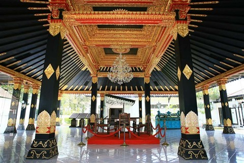

Keraton Yogyakarta

Jogja masih diatur oleh raja. Keraton merupakan tempat tinggal raja. Namun pihak Keraton mengizinkan wisatawan berkunjung pada jam tertentu. Dalam Keraton tersimpan banyak menyimpan kisah dan obyek-obyek pada masa kerajaan sebelumnya.
Lokasi Keraton ada di Jalan Rotowijayan nomor 1. Aksesnya cukup mudah. Wisatawan bisa menaiki kendaraan pribadi atau umum. Wisatawan cukup membayar 7.000 ketika ingin masuk. Keraton buka setiap hari pada pukul 09.00-14.00.